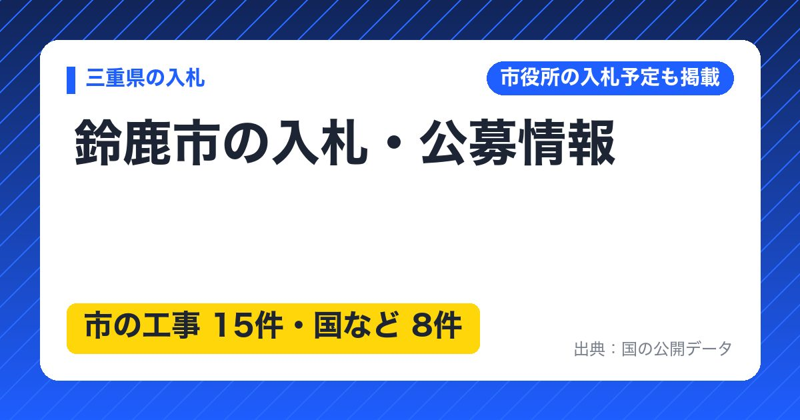

鈴鹿市の入札・公募情報【毎日更新】

三重県鈴鹿市の入札情報（市役所の工事の入札予定＋国の機関などの公告）
広告入札参加・技術者の配置に：
・施工管理技士の受験対策 通信講座（独学サポート事務局）  （1級・2級の土木・建築・電気・管工事に対応）
（1級・2級の土木・建築・電気・管工事に対応）
鈴鹿市役所の入札予定（工事）15件
出典：鈴鹿市 入札情報システム。入札日の近い順。詳細・設計図書は鈴鹿市の入札情報システムで確認してください。
工事徳居175号線舗装工事
工事一ノ宮15号線舗装工事
工事国府182号線舗装工事
工事三畑82号線舗装工事
工事平田公園管理施設整備工事
工事寺家二丁目公園外管理施設整備工事
工事西庄内157号線道路改良工事
工事市役所本庁舎市民ロビー耐火塗装改修工事
工事磯山配水管移設工事
工事岸岡配水管布設工事その２
工事一ノ宮配水管移設工事
工事平田東町外配水管布設工事
工事神戸六丁目52号線舗装工事
工事平田一丁目180号線舗装工事
工事箕田公民館外非常用放送設備設置工事
国の機関などの入札（直近30日）8件
その他寝具類賃貸借 一式
その他院内清掃業務 一式
その他セントラルモニタ 一式
その他医師事務作業補助者派遣
役務医事業務委託
役務ボイラー業務委託
広告